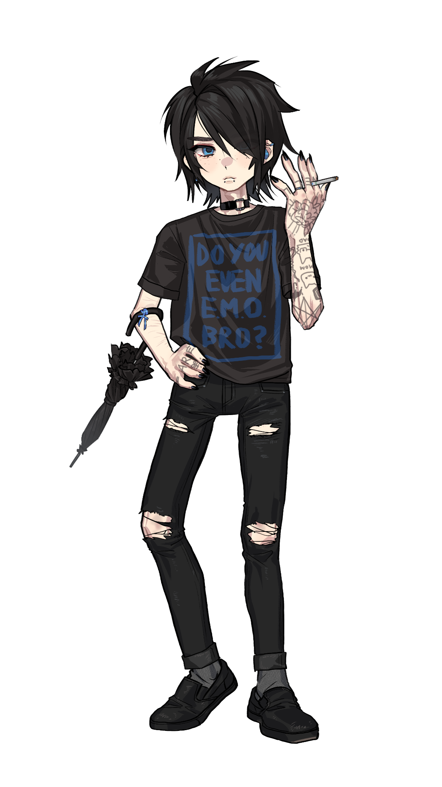
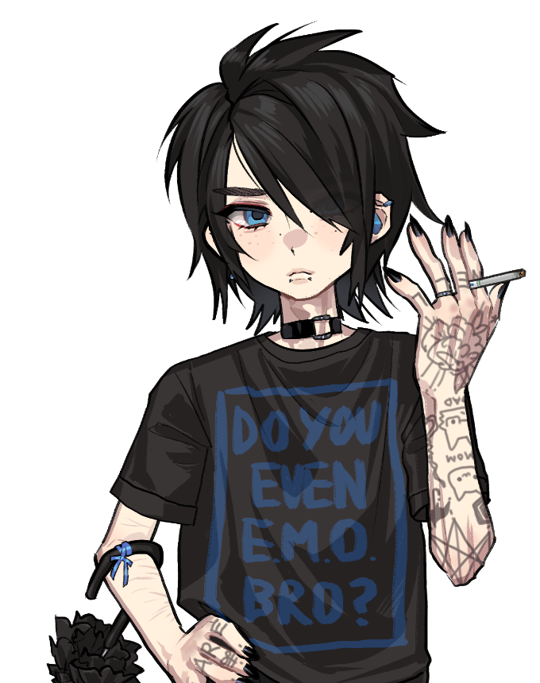

Hope
Retake-2026 の最初の公開テスト。
京成線のざわめき、下町育ちの声。 誰かの影ではなく、今の声で歌う。 冷たく、鋭く、感情的に。
冷たく鋭い、やや中性的な声質。以前よりも発音にこだわり、感情的な歌唱表現を重視したRetake。
5音階表情音源「WEIGHTLESS」
邪悪囁き / Evil Whisper
グロウル / Growl
冷たく鋭い、やや中性的。中音域～高音域を得意とする。
VCV / 連続音。UTAU・OpenUtau等で利用可能。
EMO / POST-HARDCORE / SCREAMO その他、力強く感情的な楽曲。

京成線のざわめき、下町育ちの声。 誰かの影ではなく、今の声で歌う。 冷たく、鋭く、感情的に。
原音設定：NakoTalk様
ロゴデザイン：KiryuGraphics様 キャラクターデザイン・立ち絵：セツさん
MYCOEIROINK 専用追加規約 — 生成音声のクレジット表記、モデルの再学習・再配布、なりすましに関する補足事項。
日本語多音階連続音。主体6音階 + A4 裏声 + 邪悪囁き + グロウルに、 AIRY / HAZY / WEIGHTLESS / ETHEREAL な5音階表情音源「WEIGHTLESS」を同梱。
DOWNLOAD — 827 MB
voicebank / README
Terms JA / ZH / EN
character info
credits
無断再配布禁止。制作者が3年以上完全に連絡不能となり公式配布も消失した場合のみ、規約条件下で保存目的ミラー可。
泡沫のように淡く、霞がかった夢幻的で儚い、裏声ベースの5音階表情音源。
宙に浮かぶような無重力感のある歌声で、既存音源との併用を推奨します。
AIRY / HAZY / WEIGHTLESS / ETHEREAL
5-PITCH JAPANESE VCV
AIRY / HAZY
WEIGHTLESS / ETHEREAL
コンペキノソラ［Retake］との併用を推奨。
すでにRetake本体をお持ちの方向けの追加音源です。
COEIROINK 向けの日本語トーク音声モデル。
MANA 228文＋ITA 424文、計652文で学習した「ふつー」と「寝起き」スタイル。
歌うだけじゃなく、喋るソラくんもどうぞ。
新しい「寝起き」スタイルは、目が覚めたばかりの、少し眠たげで力の抜けた声。
寝起きならではの無防備な雰囲気と、どこか色気の漂う自然な話し方が特徴です。
朝の挨拶や、気心の知れた相手との何気ない会話におすすめです。
HANASUから逃げたくて録った結果がこれだよ。
中国人の俺が日本語を喋っても、池袋弁から逃げられると思うなよ！
※「池袋弁」は中の人の自称です。生成音声のご利用前に、MYCOEIROINK専用規約をご確認ください。